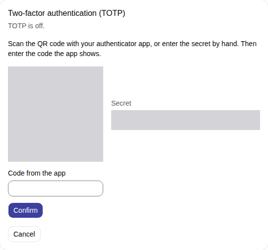
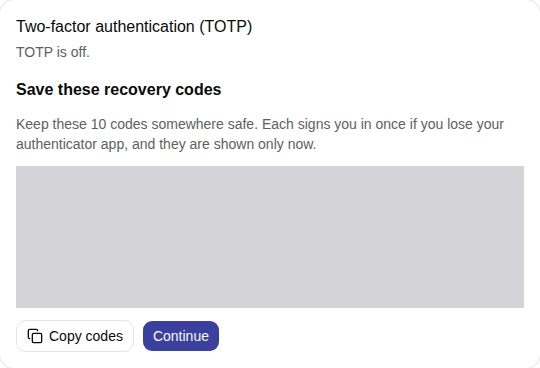
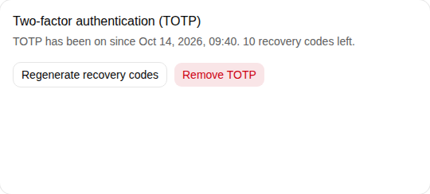
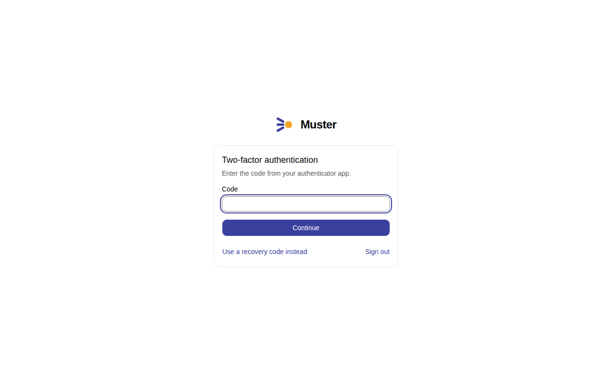
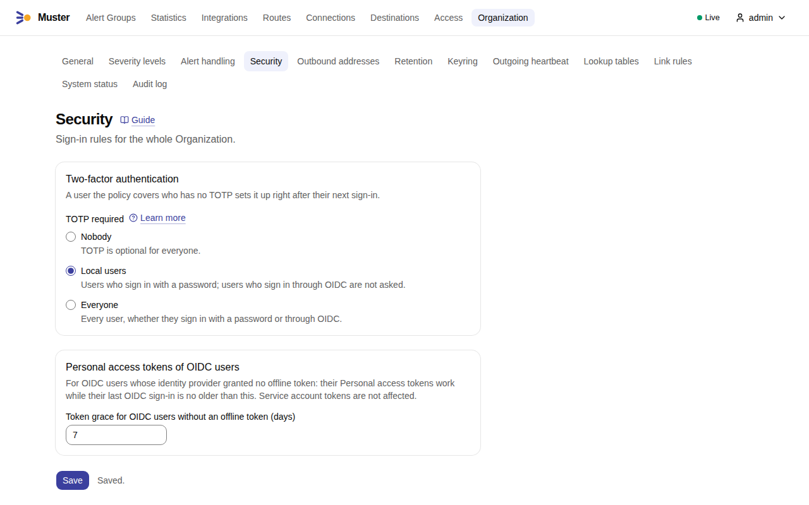

TOTP¶
TOTP is a second step in the sign-in: a six-digit code from an authenticator app, which changes every 30 seconds (RFC 6238). Every User, local or from OpenID Connect, can enrol it. It adds protection to a password that leaks, and it is the second factor of installations that cannot use an identity provider: see Closed networks.
Enrol¶
People enrol from their profile: they scan a QR code with the authenticator app and confirm with the first code.
Enrolment gives the person 10 recovery codes (auth.totp_recovery_codes), each of ten characters and usable once. They are shown once:
save them somewhere safe. In the profile a person can generate new recovery codes, which replace the unused ones, and
remove TOTP. Removing it needs the current password (a local user) or a current code or recovery code.
- Open your Profile and, under Two-factor authentication (TOTP), select Set up TOTP.
-
Scan the QR code with your authenticator app, or enter the Secret by hand. Enter the code the app shows in Code from the app and select Confirm.

-
Muster shows the recovery codes once: Copy codes, keep them somewhere safe, and select Continue.

-
The profile says since when TOTP is on and how many recovery codes are left, with Regenerate recovery codes and Remove TOTP.

A User has one enrolment. From then on, every sign-in asks for a code after the password, or after the redirect from the identity provider: Two-factor authentication asks for the Code, and Use a recovery code instead takes a recovery code.

A recovery code is accepted in place of a code, and is then used up. Until the code is given, the session can only read itself, sign out and give the code.
A wrong password or code counts as a failure, and failures slow the next attempts down per account and per source address: after 3 in a row, each attempt waits twice as long as the one before, from 1 second up to 60 seconds.
The policy¶
The Organization's policy TOTP required (organization.totp_required), under Organization → Security, has three
values:
| Value | Who must have TOTP |
|---|---|
| nobody (the default) | no one; everyone may enrol if they want |
| local users | every account that has a password |
| everyone | every account, local or from OpenID Connect |
- Open Organization → Security.
-
Under Two-factor authentication, choose TOTP required: Nobody, Local users or Everyone. Select Save.

A person who falls under the policy and has no TOTP yet must enrol right after sign-in, before they can do anything else. An account that signs in through OpenID Connect, whether created by it or linked to it, does not count as a local user for this policy.
OpenID Connect and the identity provider's multi-factor authentication¶
An identity provider may already ask for a second factor. When the OIDC setting oidc.skip_totp_with_idp_mfa (skip TOTP when the identity provider
asserted multi-factor authentication; off by default) is on, Muster skips its own code
for a sign-in where the provider's token says so in its amr claim. With the setting off, Muster asks for its own code
whenever the User has TOTP. See Sign-in with Keycloak.
A lost authenticator¶
A person who lost both the device and the recovery codes needs a reset.
- An Admin resets it under Access → Users: Reset TOTP.
- From the command line, when no Admin can sign in:
muster admin reset-totp --actor ops-alice alice
--actor names the person who runs the command, and is required; the last argument is the login of the account. The
command works on the database, with the same settings as the server.
A reset removes the TOTP and its recovery codes and ends the account's sessions. Under a policy that covers the account, the person enrols again at the next sign-in. Without the policy, they can enrol again from the profile.
What the Audit log records¶
The Audit log, under Organization → Audit log, records TOTP enrolled, removed and reset, with the User, who did it, and
the Transport (cli for the command). It never records a code. Failed sign-ins, with a wrong code too, are counted in
the metric muster_login_failures_total with the method totp; the chart rule MusterLoginFailures watches it.